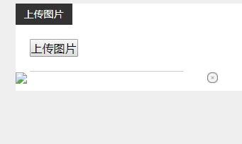
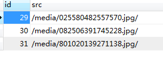

首先下载plupload插件放在static静态文件下面，官方地址:https://www.plupload.com/
项目根目录下创建media文件夹用来存放上传的图片，配置settings文件，添加media的文件路径
MEDIA_ROOT = os.path.join(BASE_DIR,'media')先写前端html页面
{# 引入插件#}
<script src="/static/plupload/moxie.js"></script>
<script src="/static/plupload/plupload.min.js"></script>
{#定义上传图片的按键和显示位置#}
<div class="sbox f_l"><span>上传图片</span>
{% for i in img %}
<img src="{{ i.src }}" alt="">
{% endfor %}
<h2><a id="upload_image_name" src="javascript:;"><input type="button" value="上传图片"></a></h2>
<ul id="image_name_list"></ul>
{# <a href="/" class="read">点击阅读</a>#}
</div>写前端js语法
{#上传图片#}
<script language="JavaScript">
var msgLayero_upload_image_name;
var index_upload_image_name;
var layer_upload_image_name = 1;
//实例化一个plupload上传对象
var uploader_upload_image_name = new plupload.Uploader({
browse_button: 'upload_image_name', //触发文件选择对话框的按钮，为那个元素id
url: '/apply/upload/', //服务器端的上传页面地址
flash_swf_url: '/static/plupload/Moxie.swf', //swf文件，当需要使用swf方式进行上传时需要配置该参数
silverlight_xap_url: '/static/plupload/Moxie.xap', //silverlight文件，当需要使用silverlight方式进行上传时需要配置该参数
multipart_params: {
type: 'image_name',
csrfmiddlewaretoken: "{{ csrf_token }}"
},
resize: {
width: 800//指定压缩后图片的宽度，如果没有设置该属性则默认为原始图片的宽度
//height: , //指定压缩后图片的高度，如果没有设置该属性则默认为原始图片的高度
//crop: false //是否裁剪图片
},
filters: {
max_file_size: '4mb'
},
init: {
//选择文件
FilesAdded: function (up, files) {
//加载层
index_upload_image_name = layer.msg('上传中...', {
icon: 16, time: 0,
shade: 0.01,
success: function (layero, index) {
msgLayero_upload_image_name = layero;//是加载层的div
}
});
//layer_upload_image_name = layer.msg('上传中...', {time: 0}); //不自动关闭
uploader_upload_image_name.start();
},
UploadProgress: function (up, file) { //上传中，显示进度条
var percent = file.percent;
msgLayero_upload_image_name.find('.layui-layer-content').html('<i class="layui-layer-ico layui-layer-ico1"></i>上传中...' + percent + '%');
},//单个文件上传完成
FileUploaded: function (up, file, responseObject) {
console.log($.parseJSON(responseObject.response));//成功回调函数
{# $('#image_name_list').html('');#}
var result = $.parseJSON(responseObject.response);
if (result.status == 1) {
//上传成功
var htmls = '<li class="img_upload" style="position:relative;margin:0 10px -10px 0;">';
htmls += '<input type="hidden" name="image_name[]" value="' + result.file + '">'; //隐藏域，是为了把图片地址入库。。
htmls += ' <img src="' + result.file + '" width="250" >';
htmls += '<span style="position:absolute;top:-8px;right:-6px;background-color:#fff;border-radius:10px;"><a href=javascript:; class="delImg" data-val="' + result.file + '"> <img src="/static/images/del.png" width="15" /></a></span>';
htmls += '</li>';
{# $('#image_name_list').append(htmls);为可同时上传多张图片，$('#image_name_list').html(htmls);为一次智能上传一张图片#}
$('#image_name_list').append(htmls);
//上传成功的弹出框
msgLayero_upload_image_name.find('.layui-layer-content').html('<i class="layui-layer-ico layui-layer-ico1"></i>' + result.message);
} else {
//上传失败的弹出框
msgLayero_upload_image_name.find('.layui-layer-content').html('<i class="layui-layer-ico layui-layer-ico2"></i>' + result.message);
}
setTimeout(function () {
layer.close(index_upload_image_name);
}, 2000);
},
//全部文件上传完成
UploadComplete: function (up, files) {
setTimeout(function () {
layer.close(index_upload_image_name);
}, 2000);
},
//返回错误
Error: function (up, err) {
msgLayero_upload_image_name.find('.layui-layer-content').html('<i class="layui-layer-ico layui-layer-ico2"></i>' + result.message);
setTimeout(function () {
layer.close(index_upload_image_name);
}, 2000);
}
}
});
uploader_upload_image_name.init();
{# 删除准备上传的图片#}
$(document).on('click', '.delImg', function () {
_this = this;
$.post('{% url "apply:delimg/" %}', {
path: $(_this).data("val"),
csrfmiddlewaretoken: "{{ csrf_token }}"
}, function (json) {
if (json.status == 1) {
layer.msg("删除成功", {
time: 2000 //2s后自动关闭
});
$(_this).parent().parent().remove();
} else {
layer.msg("删除失败", {
time: 2000 //2s后自动关闭
});
}
}, 'json');
});
</script>django后台，先创建路由
from django.urls import path,include,re_path
from apply.views import apply
urlpatterns = [
path('index/',apply.index,name='index/'),
path('about/',apply.about,name='about/'),
path('info/',apply.info,name='info/'),
path('list/',apply.list,name='list/'),
path('time/',apply.time,name='time/'),
path('fanyi/',apply.fanyi,name='fanyi/'),
# 上传图片
path('upload/',apply.upload,name='upload/'),
# 删除准备上传的图片
path('delimg/',apply.delimg,name='delimg/'),
]写方法。
from django.shortcuts import render,redirect,HttpResponse
from apply.utils import function
from blacker import settings
import os
import json
from apply.models import *
# 上传图片
def upload(request):
img_obj = request.FILES.get("file") # 通过前台提交过来的图片资源 img_obj.name avatar.jpg
range_num = function.range_num(15) # 生成一个15位随机数
print(img_obj.name)
img_type = os.path.splitext(img_obj.name)[1] # .jpg 获取文件名后缀
new_img_path = os.path.join(settings.MEDIA_ROOT,
range_num + img_type) # E:\ftp\code\www\pro\media\add_article_img\676161546271228.jpg #/media/add_article_img/123456.jpg
print(new_img_path)
img_type2 = img_type.replace(".", "") # png
with open(new_img_path, "wb") as f:
for line in img_obj:
f.write(line)
response = {
"status": 1,
"message": "上传成功",
'file': '/media/'+range_num + img_type+'/',
'file_type': img_type2
}
res = Media.objects.create(src='/media/'+range_num + img_type+'/')
return HttpResponse(json.dumps(response))
# 删除正在上传的图片
def delimg(request):
print(12)
img_path = request.POST.get('path') # /media/add_article_img/722264423391172.jpg
# img_name = os.path.split(img_path)[-1] # 获取图片名称 722264423391172.jpg
img_name = img_path.split('/')[-2] # 获取图片名称 722264423391172.jpg
img_new_path = os.path.join(settings.MEDIA_ROOT,img_name) # E:\ftp\code\www\pro\media\add_article_img\722264423391172.jpg
if not os.remove(img_new_path):
response = {
"status": 1,
"message": "删除成功"
}
return HttpResponse(json.dumps(response))方法里面有用到function.range_num函数，这是一个封装的产生随机数函数，在应用目录下创建utils文件夹，并创建function.py文件，内容如下
import random
# 随机数
def range_num(num):
# 定义一个种子，从这里面随机拿出一个值，可以是字母
seeds = "1234567890"
# 定义一个空列表，每次循环，将拿到的值，加入列表
random_num = []
# choice函数：每次从seeds拿一个值，加入列表
for i in range(num):
random_num.append(random.choice(seeds))
# 将列表里的值，变成四位字符串
return "" . join(random_num)#5454上传发现图片上传成功，但是页面不能正常显示；

需要再配置路由，
from django.contrib import admin
from django.urls import path,include,re_path
from apply.views import apply
from django.views.static import serve
from blacker import settings
urlpatterns = [
re_path(r'^media/(?P<path>.*)', serve, {"document_root":settings.MEDIA_ROOT}),
path('',apply.index,name='index/'),
path('admin/', admin.site.urls),
path('apply/',include(('apply.urls','apply')))
]
配置后在上传图片如图所示
同时图片已写入数据库，从数据库获取数据并写在页面上；

done。